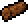
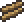

Верстак (Work Bench) — рабочее место, используемое для создания вещей. Для НИПов является столиком . Чтобы использовать верстак, подойдите к нему и откройте инвентарь. В вашем списке создания вещей появятся новые рецепты. С версии 1.2 ломается не молотом, как в ранних версиях, а киркой.
На верстаке создаются лишь некоторые предметы. Печь, наковальня, алхимический стол, адская печь и лесопилка нужны для создания остальных предметов, но если поставить на верстак бутылку, его можно будет использовать как алхимический столик.
С версии 1.2 существуют разные виды верстаков. Часть из них может быть сделана. Отличаются они лишь внешним видом и местом, где их можно найти (Данж, ад и т.д.).
Виды верстаков
| Спрайт | Название | ID | Станция крафта/ Способ добычи | Материалы |
|---|---|---|---|---|
 |
Верстак | 36 |
 Древесина x10
Древесина x10 |
|
| Верстак из эбенового дерева | 635 |
 Эбеновая древесина x10
Эбеновая древесина x10 |
||
| Верстак из махагони | 636 |
 Махагони x10
Махагони x10 |
||
| Верстак из перлитовой древесины | 637 |
|
||
| Верстак из северной древесины | 673 |
 Северная древесина x10
Северная древесина x10 |
||
| Костяной верстак | 811 | Костяной сварщик | Кость x10 | |
| Кактусовый верстак | 812 | Кактус x10 | ||
| Верстак из плоти | 813 | Станция клонирования плоти | Блок плоти x10 | |
| Грибной верстак | 814 | Светящийся гриб x10 | ||
| Верстак из слизи | 815 | Блок слизи x10 | ||
| Верстак из теневой древесины | 916 | Теневая древесина x10 | ||
| Тыквенный верстак | 1795 | Тыква x10 | ||
| Жуткий верстак | 1817 |
 Жуткая древесина x10
Жуткая древесина x10 |
||
| Верстак династии | 2229 |  Древесина династии x10 | ||
| Медовый верстак | 2251 | Дозатор мёда | Блок мёда x10 | |
| Замороженный верстак | 2252 | Генератор мёда | Блок синего льда x10 | |
| Механический верстак | 2253 | Паровой котёл | Шестерёнка x10 | |
| Верстак из пальмовой древесины | 2534 |  Пальмовая древесина x10 | ||
| Небесный верстак | 2631 | Небесная фабрика | Солнечная пластина x10 | |
| Стеклянный верстак | 2632 | Стеклоплавильная печь | Стекло x10 | |
| Верстак из живого дерева | 2633 | Станок из живой древесины |
Древесина x10 |
|
| Верстак ящеров | 1145 | Можно найти в храме джунглей | Нельзя создать | |
| Верстак синего данжа | 1398 | Можно найти в синем данже | Нельзя создать | |
| Верстак зелёного данжа | 1401 | Можно найти в зелёном данже | Нельзя создать | |
| Верстак розового данжа | 1404 | Можно найти в розовом данже | Нельзя создать | |
| Обсидиановый верстак | 1461 | Можно найти в Аду | Нельзя создать | |
| Готичный верстак | 1511 | Можно найти в данже | Нельзя создать | |
| Кристальный верстак | 3909 | Кристальный блок x25 | ||
| Золотой верстак | 3910 | Дроп с пиратов | Нельзя создать |
Рецепты
| Предмет | Ингредиенты | Примечания |
|---|